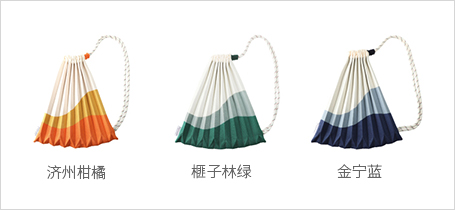
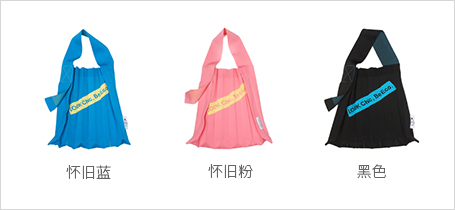

环保产业
- Home
- 投资环境
- 未来朝阳产业
- 环保产业
环保产业 (Eco-friendly Sector)


在气候变化和环境污染等影响下，现代社会的日常生活方式和传统产业结构、企业经营方式都在不断发生变化。因而，越来越多的道德型消费者试图减少资源盲目浪费，转而选购环保产品，同时要求企业也承担环境保护等社会责任的市场呼声也日益高涨。
目前，济州有越来越多的公司开始接受这种消费者需求，挑战新型商业模式的可能性，以抢占道德型消费市场。因为身处气候变化时代，企业的环境和社会责任既是可持续经营的必要条件，也是一种新的竞争力。
济州的清洁自然品牌因“世界自然遗产三冠王”而熠熠生辉，还在亚洲市场上拥有超高知名度，将使济州成为企业追求环保道德型业务的最佳投资地点。
升级回收产业 (Upcycling Sector)
“绿色回收，重获新生”
济州资源循环系统建设项目
济州资源循环系统建设项目
Pleats Mama——用16个500ml三多水塑料瓶制作环保袋
韩国回收品牌Pleats Mama与晓星、济州道政府携手合作，率先在韩国销售完全用济州三多水废旧塑料瓶再生纤维制作的产品，受到市场广泛关注。
"绿色回收，重获新生"是济州地区的资源循环系统（Recycle Eco-system）建设项目。主要由晓星天禧负责收集济州三多水的废旧塑料瓶，掌握再生纤维制造技术，利用塑料瓶再生颗粒制造再生纤维“regen®jeju”，然后由初创型环保箱包制造商Pleats Mama将纤维制成最终产品并进行销售。
※ regen®jeju：韩国首款100%济州废旧塑料瓶再生聚酯
※ creora®regen：全球首款100%再生氨纶
※ creora®regen：全球首款100%再生氨纶
-
Rucksack
-
Big Bag